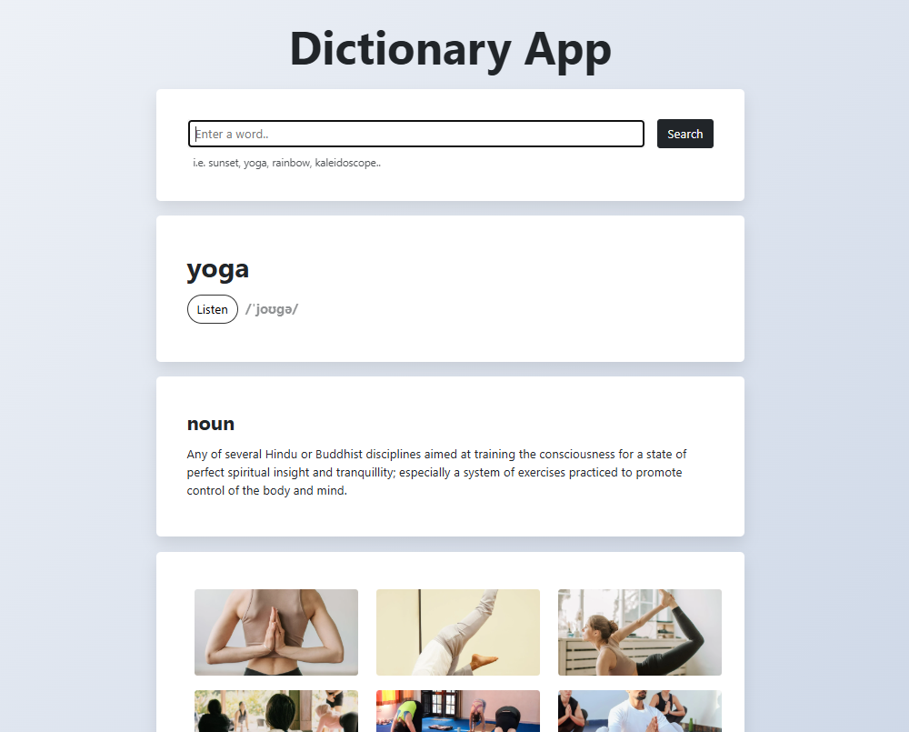

Take a look at what I've been working on!

Travel Project
This fully responsive travel landing page utilises a mobile-first design approach, leveraging CSS Media Queries to ensure a seamless cross-platform experience across mobile, tablet, and desktop devices. The site architecture employs a hybrid of CSS Grid and Flexbox to manage complex layouts—including image galleries and responsive card components. Additionally, I’ve optimised user engagement by integrating external embeds, including interactive Google Maps and synchronised Instagram video content to provide a rich, multimedia experience.

React Weather App
Built with React, this application leverages asynchronous API integration and complex JSON parsing in order to deliver real-time weather updates and a dynamic 5 day weather forecast. The app is organised into reusable components (Search Bar, Current Weather, Forecast, etc) and utilises State Management to handle user input and dynamically render weather data based on the selected city. Conditional rendering has also been applied in order to display different animated weather icons based on the weather conditions or time of day.

Dictionary App
Built with React, this Dictionary App focuses on handling complex data from multiple sources in real-time. I integrated Pexels API alongside a custom dictionary engine to pair word definitions with dynamic imagery. To keep the code clean and scalable, I used a modular component structure and React Hooks for state management. I also focused on the user experience by adding conditional rendering for audio pronunciations and a mobile-first design using Bootstrap and Flexbox. The project is fully managed through npm and deployed via GitHub and Netlify.

World Clock Project
Built with JavaScript, this World Clock project utilises integration of Moment.js and Moment Timezone libraries in order to render complex date formatting. The app uses JS timing events (setInterval) to ensure the UI updates every second without a page refresh, providing real-time accuracy across different timezones. I also implemented event listeners for city selection, allowing users to toggle between global locations and their own local time instantly. The final product is a fully responsive interface managed through GitHub and deployed on Netlify.